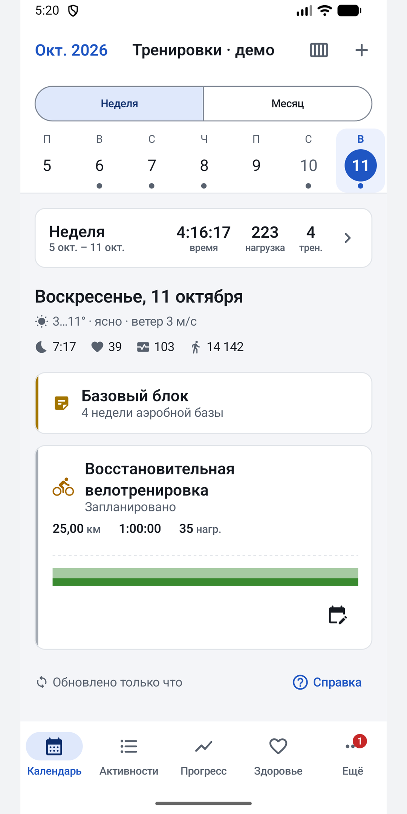
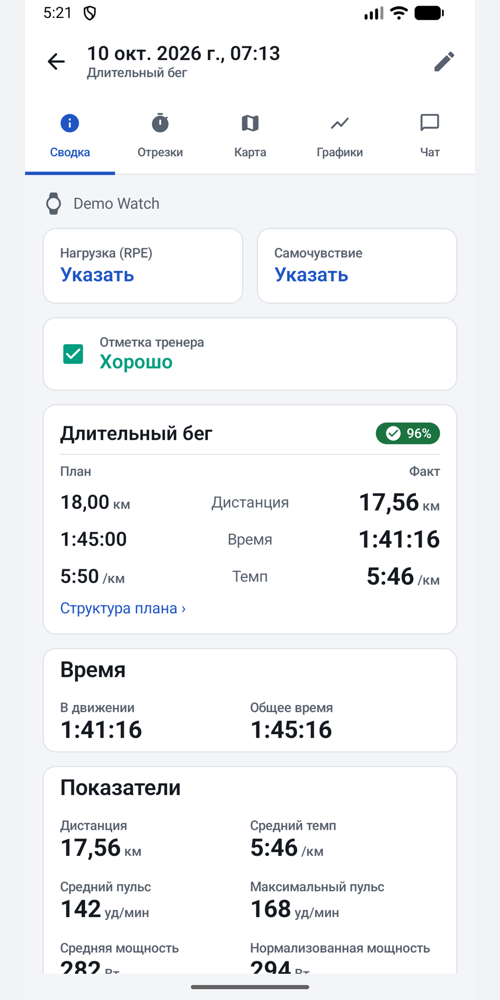
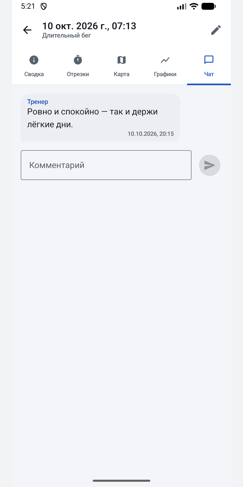
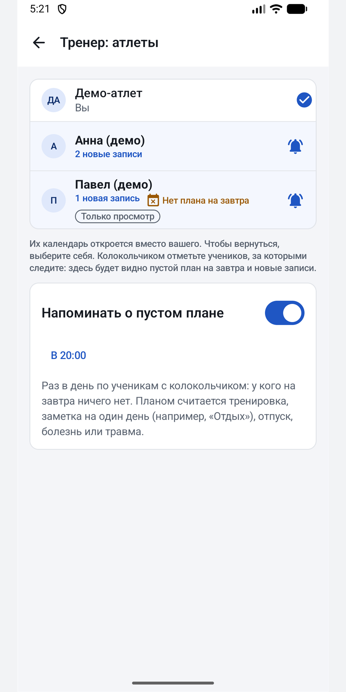
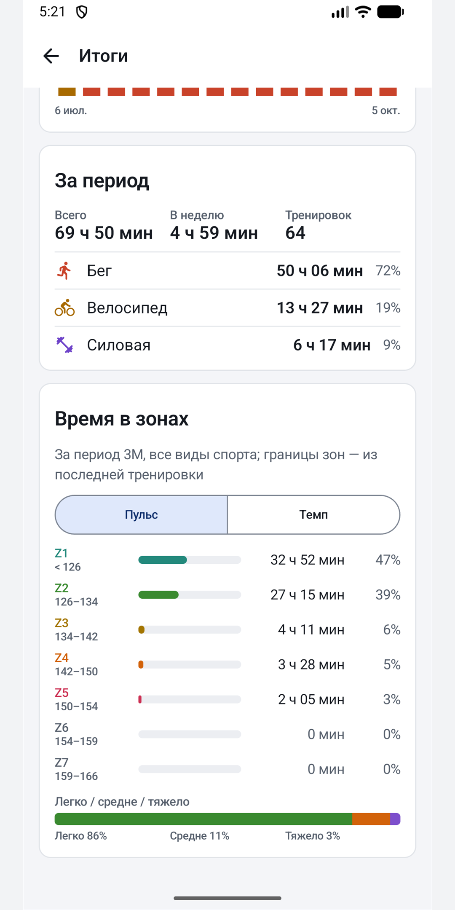

План, тренировки и тренер в одном приложении. Открывается на сегодняшнем дне, работает без связи и отправляет ваши правки обратно в intervals.icu.
Скачать APKКак установитьКонфиденциальность · Бесплатно и без рекламы. Weekform — независимое приложение, его делает не intervals.icu.

Пропавшие тренировки — самая частая жалоба на приложения в этой нише. Weekform показывает, когда последний раз обновлялся, и в одно касание объясняет, что проверить.
Неделя хранится на телефоне, поэтому открывается сразу, а обновляется в фоне. Правки без сети уйдут позже.
Не сайт в обёртке: виджеты, уведомления, тёмная тема, правки без сети.




Уведомление открывает нужный тред. Свои сообщения можно изменить или удалить.
Напоминание оценить тренировку придёт не сразу, а когда вы уже дома.
Видна на каждой карточке. Тренер ставит её в одно касание.
Колокольчик на учениках: у кого пусто на завтра и кто добавил что-то новое.
Неделя и месяц, план и факт, перенос перетаскиванием, цвета выполнения с пояснением.
Структурные тренировки, план из библиотеки, отметка зала выполненным.
Графики, отрезки, километры, карта, зоны за любой период, форма и усталость.
Сон, ВСР, пульс покоя, настроение; виджеты «сегодня» и «форма».
Бесплатно, без рекламы и без нашего аккаунта. Если приложение помогает тренироваться, автора можно поддержать прямо в нём.
Нет. Это независимое приложение, которое работает с вашим аккаунтом через открытый API intervals.icu.
Пока нет. Weekform сделан для Android.
Strava не разрешает intervals.icu передавать тренировки другим приложениям. Подключите часы (Garmin, COROS, Polar, Suunto…) к intervals.icu напрямую.
На вашем телефоне и в intervals.icu. У Weekform нет своего сервера, и аналитику он не собирает. Подробнее — в политике конфиденциальности.
Да. Переключайтесь на учеников, которые добавили вас тренером: планируйте, комментируйте, ставьте отметку.
Скачайте APK в релизах на GitHub и откройте его. Android один раз попросит разрешить установку из браузера или файлового менеджера; Play Защита может предупредить о неизвестном разработчике — для приложений не из магазина это обычно. Обновления: приложение раз в день проверяет GitHub, сообщает о новой версии и ставит её по кнопке «Обновить»; можно также добавить репозиторий в Obtainium.
Нисколько.
Weekform публикуется файлом APK в релизах на GitHub. Скачайте последний и установите — о новой версии приложение скажет само.
Скачать APK